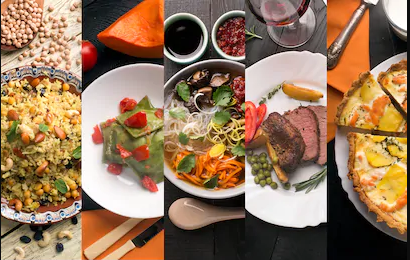

Food with Culture
WHAT IS FOOD CULTURE? Food culture (by definition) refers to the practices, attitudes, and beliefs as well as the networks and institutions surrounding the production, distribution, and consumption of food. That’s a mouth full so let’s break it down — food culture is the connection, beliefs, and experience we have with food and our food system. It incorporates our cultural heritage and ethnicity, but is not limited to it. Our food culture is as much about our ethnic cultural heritage, as it is about our environmental culture and the way our surrounding impact the foods we eat and the way we experience them.
Travel and Eat
Whether it's your goal to visit every country in the world or to simply sample the food each considers its national dish, we have spent hours salivating over all the must-try dishes. While some places have tried-and-true recipes that stem from limited options, others have foods influenced by a conflux of explorers, colonists and ex-pats. You may be surprised to learn how many of the most faraway locales share the same tastes you do: Comfort food is a uniting commonality